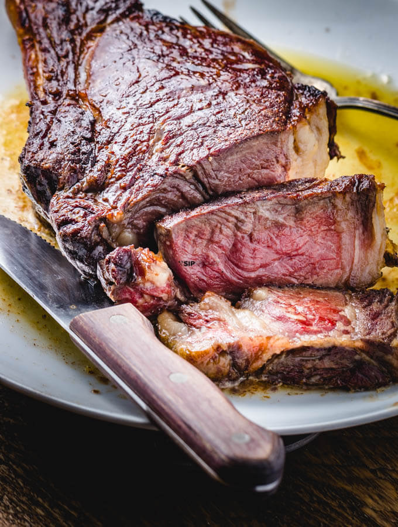

Ribeye Recipe

It's a stake, it doesn't need describing other than it is full of nutrients and tastes amazing :)
Medium Ribeye stake
Ribeye is very easy to cook. Depending on the thickeness
you willusually cook 3 minutes on oneside and 3 on the other.
Dependingon the fat content you can switch the sides every few minutes
but that tends to makeit more towards the rare side.
Ingredients
Steps
- Turn on heat
- Put stake
- cook for 1min, turn over.
- cook for 1 min, turn over again
- cook for 2-3 mins, while it cooks add salt and pepper on top
- Turn over and do ecatly same as step abive.